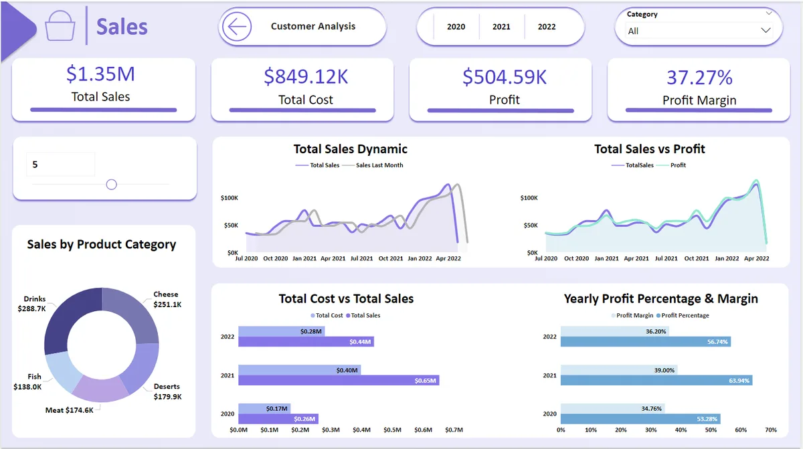
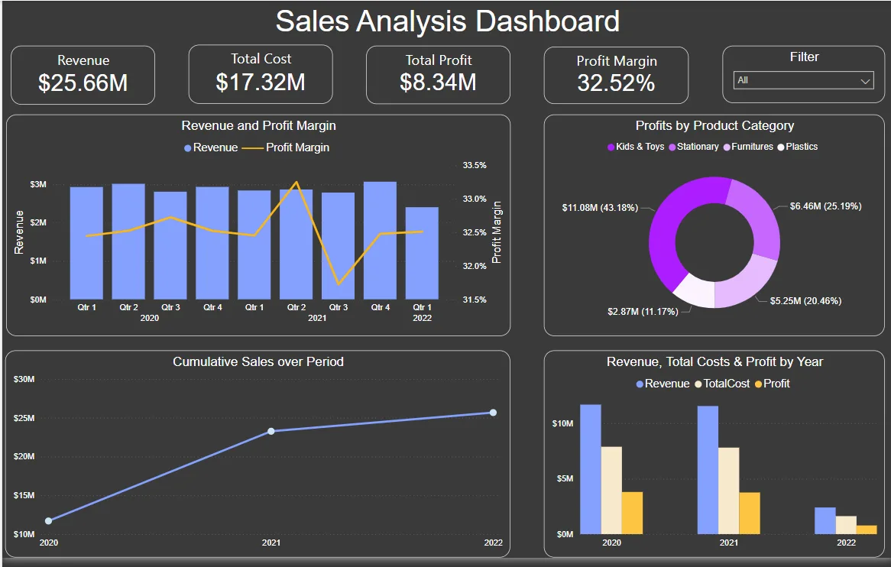

Pipelines & integrations
I pull data from Google Cloud APIs, custom REST APIs, app databases, CSV files, sheets and forms, then land it cleanly in PostgreSQL or BigQuery.
Python · FastAPI · REST APIs · Google Cloud
Analytics Engineer · Data Analyst
I'm Tasnim, an analytics engineer and data analyst with four years across fintech, travel, B2B and civic data. I turn messy sources into trusted numbers and automate the reporting, so teams spend their time deciding, not compiling. Currently at Gozayaan.
I pull data from Google Cloud APIs, custom REST APIs, app databases, CSV files, sheets and forms, then land it cleanly in PostgreSQL or BigQuery.
Python · FastAPI · REST APIs · Google Cloud
I write star-schema marts, production SQL and data-quality rules, so every team counts customers, transactions and revenue the same way.
SQL · BigQuery · PostgreSQL · Snowflake
Any report or data handoff that repeats becomes a scheduled job. Python does the work and cron or n8n runs it, so nobody has to remember.
GitHub Actions · n8n · Apps Script
Cohorts, retention, CAC and LTV, funnels, pricing and revenue, delivered as dashboards people use on their own.
Metabase · Power BI · Looker · Mixpanel
If a report or data handoff happens on a schedule, it should run itself. I write the job in Python, schedule it on GitHub Actions or n8n, and deliver the output wherever people already look. I've used this pattern to retire hand-built daily reports and recurring data extracts.
Python · GitHub Actions · n8n · SQL · REST APIs
A few outcomes from the work above.
Reporting speed
5 → 1 day
Month-end reporting turnaround after I redesigned the process.
Gozayaan
Public impact
~5,700 affidavits
Candidate affidavits from four national elections, scraped, digitised and published in Transparency International Bangladesh's public "Know Your Candidate" dashboard for voters.
Transparency International Bangladesh
Breadth
15+ dashboards
Dashboards and reports across 6 business functions, built on a warehouse I designed from the ground up.
Riseup Labs
Time saved
8–10 hrs / week
0of a 40-hour week40h
Manual data collection replaced with automated pipelines and n8n workflows into PostgreSQL.
Riseup Labs
Decision speed
30% faster
Shorter decision cycles once teams had live dashboards instead of waiting on manual reports.
Riseup Labs
Marketing funnel
+5–8% conversion
Funnel and channel analysis that found where prospects dropped off, and flagged a paid campaign that wasn't paying back, which was then stopped.
Riseup Labs
Pick a bar to read what I did there.
Employer work is confidential, so these are personal projects. Each one covers the problem, what I did and what I found, with charts redrawn from the real output.
Python · pandas
SQL · MySQL
WITH cte AS (
SELECT location,
MAX(CAST(total_deaths AS UNSIGNED)) AS deaths,
MAX(CAST(total_cases AS UNSIGNED)) AS cases
FROM coviddeath
WHERE continent IS NOT NULL
AND location = 'bangladesh'
GROUP BY location)
SELECT location,
ROUND(deaths / cases * 100, 2) AS fatality_rate
FROM cte;
Power BI · DAX · data model

Power BI
More, including data engineering exercises and small tools, on GitHub ↗
The credentials that shaped how I work, from degree to today. Most of them earned alongside the job.
Still learning
Building small tools, learning AI and data engineering, and finding new trails.
Open to remote opportunities
I'm available for remote data engineer and analytics engineer roles, and I take on freelance projects in data pipelines, data modelling and dashboards.
Have a role or a data problem? Let's talk. Email is the quickest way to reach me.